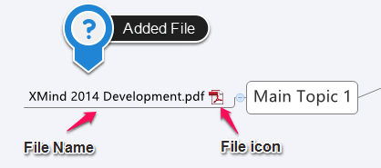

添付ファイル
XMind では、トピックのサブトピックとして、 1 つのサブトピックに、１つの外部ファイルを添付することができます。サブトピックのタイトルは、添付ファイルのファイル名と同じです。
トピックに添付ファイルを追加するには 2 つの方法があります。
方法 1:
- トピックを選択します。
- [添付ファイル] ダイアログ ボックスを開きます。
- メニューの[挿入] → [添付ファイル]を選択します。
- ツールバーの添付ファイルアイコン をクリックする。
- ファイルを選択し、[OK]をクリックします。
- 選択したファイルは、対象のトピックのサブトピックとして追加されます。
方法 2:
- あなたのディレクトリから XMind に追加するファイルを選択します。
- マップにファイルをドラッグします。
- 添付ファイルをサブトピックにしたい対象のトピックにファイルをドロップします。
- マップ上の空白の場所にファイルをドロップすると、フローティング トピックになります。

注: すべての添付ファイルはトピックとサブトピック同様に、移動、変更、削除することができます。